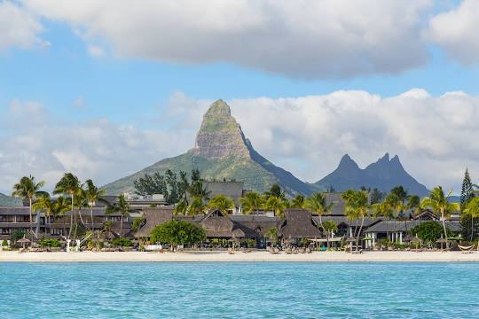

01
About Me
Hi, I am Deborah Ama Paintsil, a computing student of the
African Leadership University, Mauritius
I am dynamic and creative person who loves nature and passionate
about things that makes me grow.
Resume
02
Background
I am a Ghanaian and I am from the Central Region of Ghana but I
reside in Ashaiman, a district in the Greater Accra Region.
I can say I'm about 1.5m tall and weigh 60kg, which was a total shock to me
My father's name is Robert Mensah Paintsil and my mom is Mercy Mensah Paintsil.
I am the 3rd of their six children. I love beans with red oil and fried plantain
I love watching movies, singing and reading.
I stay closer to a water body called the Ashaiman Dam. The community I reside in is a suburb
of Ashaiman called Jordan Village. Life at Jordan Village is not a bed of roses.
I wish to be a role model to most of the ladies and girls in my neighbourhood because of
how events turn out in our lives during growth. Some gets pregnant before they complete Junior High school
whiles others learn to trade and get married after they complete Senior High School.
I am a past student of the Tema Methodist Day Senior High School, Ghana. I was offering
Bsc Mathematical Sciences in the University of Ghana, Legon and stopped in my 2nd year to continue schooling in
Mauritius.
Some pictures of Jordan Village
03
My country
Ghana was the First Sub-Saharan Country in Africa to Gain Independence.
One of the fascinating historical facts about Ghana is that it achieved complete independence for the first time
in Sub-Saharan Africa in 1957.
Ghana was created by joining the Togoland trust with the former British Gold Coast area.
Historical Places in Ghana
On the site of a former British polo field where Ghana's independence was proclaimed in 1957, Kwame Nkrumah
Memorial Park
was constructed.
The Mausoleum, a majestic marble monument, serves as both the final resting place for Fathia Nkrumah and the
first President of Ghana.
Elmina Castle which was built in 1482 by Portuguese conquerors is one of the best preserved forts along
the
Ghanaian coast. After first being a
camp for weapons and resources such as gold and ivory it became a depot for slaves when the slave trade
massively increased towards the end of the 17th century.

Tucked away in the Assin Attandanso Reserve is the Kakum National Park and Canopy Walkway that offers
visitors
spectacular scenery and a fascinating wildlife experience
along with modern camping facilities. The park’s best-known feature is undoubtedly its 7 suspension bridges
which form a 333-meter long canopy walkway, suspended up to 27 meters above the forest floor from trees that are
over 300 years old.
Indigenous Ghanaian Dishes
Banku with Pepper and Grilled Tilapia
Beans with Red Oil and Fried Plantain
Fufu with Light Soup and Assorted Meat
04
Before ALU

I was looking for scholarships because I did not hear from the
Indian institution I applied to due to the covid-19 pandemic
that started. I saw an advertisement about a school that is
inspiring to raise young African leaders and I started reading
about it because I was curious to know more.
I took the test that I saw after reading and later received an
email talking about how they like my drive and passion. I felt
this is an institution that has been able to identify the needs
of an individual through a test. And so, I decided to apply to
study there
It has always been my dream to help the people in my community
and country at large, so after reading the dreams and goal of
the school, I realized I have found an institution that can help
me achieve my dream and even give me better ideas on how to do
it.
The application process was not that difficult to follow, the
various instructions that was given made it easier to apply.
I was so excited and happy when I got an email informing me
about my admission. It was like a dream come true.
Life At ALU
Because of the Covid-19 pandemic, we had to travel to Mauritius
in January, 2021 instead of September, 2020. It was quite a
fascinating situation because we had to do some few lessons
online from September to December, 2020 where learnt about
certain things of ALU and how to use learning materials provided
by the institution.
I had to be in quarantine in a country i had no idea about and
it was suffocating especially because of the inability to go out
and explore the place. After the quarantine for 2 weeks, I was
able to meet other students and we were transported from the
hotel to the school.
Seeing the school for the first time was not what i expected.
Because I was attending a university, which was the biggest in
Ghana, I was a bit disaapointed about the spaces but seeing the
facilities and structures was wonderful and the interactions I
had with various students was more welcoming than I thought.
From starting classes, the facilitators had a welcoming face and
encourages us by helping whenever we needed them. We had
leassons on Leadership Core with courses such as Data &
Decisions, Communicating for Impact, Enterpreneurial leadership
which gave me lessons on how to be a leader with empathy and
projects which gave me an opportunity to work on real life
situations with my peers.
My advice to prospective is that they should embrace themselves
for self learning and also make good use of all the
opportunities given to them.
What I can say is that it is an ADVENTUROUS PLACE!!
05
Social Life
I can sometimes be seen as a boring person because I love to be
by myself either watching a movie or doing some basic stuffs. So
far I have tried to become more sociable rather than being an
introvert.
Most people tend to think I am an introvert and others too an
extrovert. I love spending time alone and doing things that
excite me the most. But I have some social life that includes
both personal and professional interactions. I see it as an
element of learning, joy, self-fulfillment and personal
resilience. I love working as a team with my peers groups and
friends because I see it as a way of learning from people. I
spend time with friends, example friends with the same interest
as me. I love to listen to people so I can hear diverse ideas of
people about life.
I have loved to talk to friends and interact more with them because of
the friends I made when I started studying in Mauritius. I actually love to make
friends.
06
Life In Mauritius
Mauritius, a wonderful place to be. I can say it is a lovely place to be.
Been a Ghanaian, I honestly do not appreciate the food of Mauritians.
Getting to Mauritius, during the first week in quarantine, I could not eat any of their foods
except junk foods like pizza, burger and wraps prepared for us.
I would have loved to travel across Mauritius these past 1 and half years I hace been there
but I never got the chance to do these traveling except going to the beaches, which are beautiful
places one will love to be because of the beautiful scenery and the waves. I loved to chance sit there
to enjoy the waves of the sea.
Studying in Mauritius has also given me the opportunity to do part time works which I never got the opportunity
to do in my home country. I was able to work 20 hours a week.
Although staying alone can be quite expensive, working whiles studying helped me a lot.
My life in Mauritius has been good so far and wonderful, I had an experience of staying alone and
making important decisions that affects my life.
Not forgetting the Mauritians who made staying in their country wonderful. Although there were some bad
encounters
with some of them, the good ones made it lovely.
These are some lovely places I will like to visit before I graduate African Leadership College and leave
Mauritius.
Chamarel Seven Colored Earth Geopark

Black River Gorges National Park

Flic En Flac Beach
Casela Nature Parks
07
Ideas For the Future
I have always had so many plans and ideas for the future. Growing up in an under developed community in Ashaiman
and seeing how young girls in my community end up forfeiting their futures because of pregnancy,
I knew I must do something for this community. It has always been sad to see girls in the same age group as mine
giving heed to pressures and getting pregnant at the end.
Those who made it to high school either drop out at the end or complete with poor grades which do not allow them
to further their studies in the University or Polytechnic.
After realising these ordeals, I decided to come up with something that can benefit both my society and other
communities who are facing these issues. I came up with idea of opening an IT firm that will give all
young ladies adequate skills and most current skills needed in the Technological world this century and beyond.
I will also create an organization where young girls will have the opportunity to be encouraged on daily basis
either through incentives,
books or stipends which can help to better the grades of those who are in the high school.
I also decided on creating an organization which will teach and train every young person some handy work skill
such as knitting of bags, clothes, beads making and other skills that can help reduce the rate of unemployment.
Ideas for Career
I want to be a software engineer or website developer and also I want to be an international business woman.